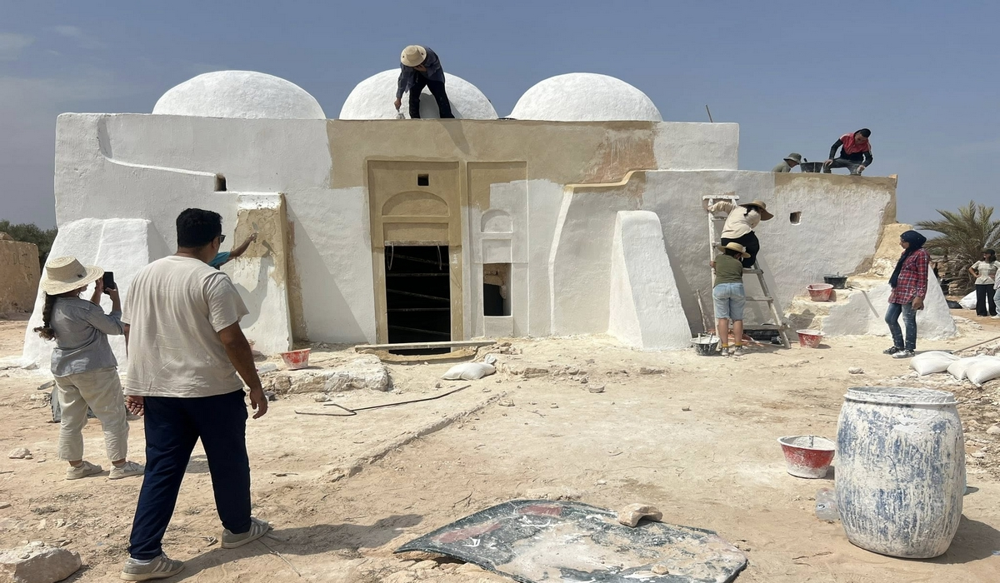

01
PROTECTION
Préserver le patrimoine
La protection repose sur la conservation des monuments historiques, des ensembles traditionnels et des espaces qui contribuent à l'identité de l'île. Elle nécessite un suivi régulier et une coordination entre les institutions et les acteurs locaux.